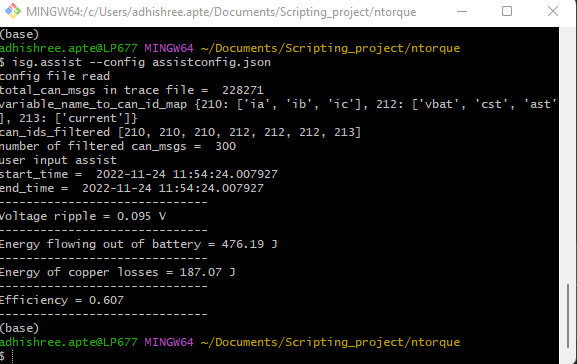

Assist
The following command is used to analyse assist and charging efficiency taken from PCAN. The trace files contains charging or assist.
{
"begin_time" : [11, 54, 24],
"end_time" : [11, 54, 25],
"Rs" : 33.5,
"sym_file" : "Symbol_file_isg_assist_codebase.sym",
"trace_file" : "assist_test_24nov.trc",
"battery_current" : "IDC_Estimated",
"battery_voltage" : "Vbat",
"assist_state" : "Assist_State",
"ia" : "IA",
"ib" : "IB",
"ic" : "IC",
"charge_state" : "Charging_State",
"a_or_c" : "a"
}
Example set of config, trace, and .sym files are config.json, trace.trc and symbol.sym.
Command below is used to analyse trace taken from PCAN.
isg.assist --config assist.json
Description of config.json file:
“sym_file” : Name of PCAN
.symfile“trace_file” : Name of
.trcfile“begin_time” : Speed jump in RPM at fire point. Motor-engine specific.
“end_time” : Time in seconds required to achieve “vertical_speed_jump” at fire point.
“Rs” : Phase resistance in mOhm of the motor
“a_or_c” : Assist “a” or charging mode “c”
“operation_mode” : Op_mode variable name in
.symfile“battery_current” : Ibat variable name in
.symfile“battery_voltage” : Vbat variable name in
.symfile“assist_state” : Assist state variable name in
.symfile“charge_state” : Charging state variable name in
.symfile“ia” : Phase current A in
.symfile“ib” : Phase current B in
.symfile“ic” : Phase current C in
.symfile
Energy from battery:
e_bat = Vbat.Ibat.t
Copper loss:
e_loss = Rs.(ia^2 + ib^2 + ic^2)t
Efficiency:
Charging-
eta = -1*e_bat/(-1*e_bat + e_loss)
Assist-
eta = 1 - (e_loss/e_bat)
Voltage ripple, efficiency, energy from battery and copper loss values are printed on command line. Sample output is in figure below :
